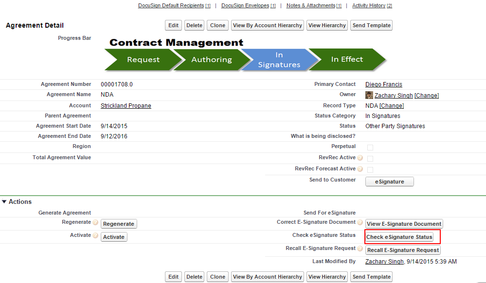

Checking eSignature Status
If you do not click Check eSignature Status, the system will automatically update the status if you have set up a batch job. Once the documents have been signed, you can check the status. The signed documents are added to the Notes and Attachments section. The Status is also updated to Fully Signed. The recipients must sign the agreement documents in DocuSign to further update the status. The Check eSignature status button does not appear when the Agreement status is Fully Signed or when the Signature is declined.
The DocuSign connector allows you to check eSignature status by two ways - Manual and Automatic.
To check eSignature status manually
Progress your agreement record to the point where the Check eSignature Status button is available and click it.

The recipients must sign the agreement documents in DocuSign to further update the status. The Check eSignature status button does not appear when the Agreement status is Fully Signed or when the Signature is declined.
A signed PDF is added to Notes & Attachments related list as well. The status of the DocuSign Envelope is also changed.
The Agreement Status of both Parent Agreement and Child Agreement or Sibling Agreement or Related Agreement is updated after the document is signed.